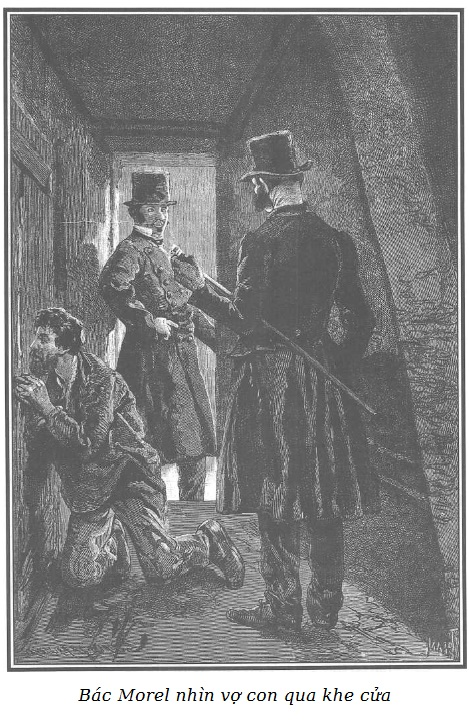
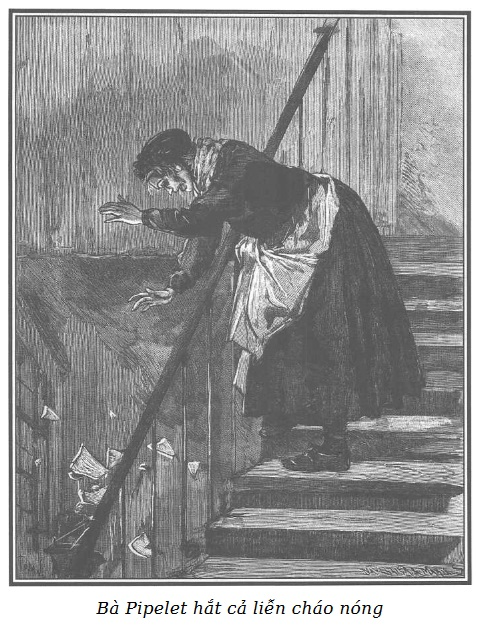

Mái tóc hoa râm dựng ngược lên vì kinh hãi và tuyệt vọng, bác Morel bế đứa con gái đã chết trên tay, mắt mở trừng trừng ráo hoảnh và đỏ ngầu, nhìn nó mãi không thôi.
- Anh Morel! Anh Morel! Đưa Adèle cho tôi. - Người đàn bà khốn khổ chìa cả hai tay về phía chồng, gào lên. - Không, không đúng đâu! Nó không chết… Rồi anh xem… Tôi đi ủ cho nó đây, ấm lại ngay đấy mà!
Bà lão dở người tò mò nhìn hai tên trợ tá mõ tòa đang loay hoay quanh Morel, bác thợ mài ngọc, còn bác vẫn cứ khư khư ôm chặt con bé không rời. Bà lão thôi không rú lên nữa, ra khỏi chỗ nằm, chầm chậm tiến lại, thò cái đầu gớm guốc ngẩn ngơ, đần độn nhìn qua vai bác Morel… Người bà ngoại ấy ngắm xác đứa cháu gái hồi lâu…
Mặt bà vẫn cứ ngây dại như mọi khi. Sau vài phút, bà lão dở người gầm gừ trong họng như một con thú đói mồi quay về chỗ nằm, gieo mình xuống ổ mà réo:
- Đói! Đói lắm!
- Đó! Các ông thấy không? Con bé Adèle khốn khổ mới chỉ lên bốn thôi! Tối qua tôi còn ôm hôn nó. Vậy mà sáng nay… Đấy, các ông sắp lại bảo: “Thế là đỡ phải nuôi, và thế là phúc cho nhà anh” đúng không? - Khuôn mặt nhớn nhác, người thợ thủ công nói vậy.
Tai họa liên tiếp như thế, đầu óc bác rối tung. Bác gái Madeleine lại gào to:
- Ơi, anh Morel, đưa con đây! Đưa nó cho tôi!
Bác thợ chuyền đứa con gái đã chết cho bác gái:
- Ờ nhỉ, bây giờ tới lượt mẹ nó!
Rồi bác úp mặt vào hai bàn tay, rên rỉ hồi lâu.
Bác gái thẫn thờ chẳng kém gì bác trai, giúi thi hài con bé vào trong ổ rơm, trìu mến nhìn nó không chớp mắt, như sợ người ta cướp mất nó đi, giữa lúc mấy đứa lớn đang quỳ xung quanh mếu máo.
Bọn trợ tá mõ tòa thấy đứa bé chết thì cũng thương, nhưng sau đó lại trở về thói quen cay nghiệt phũ phàng:
- Úi chà! Này anh bạn! - Malicorne nói với bác thợ. - Cháu nó đã chết! Đúng là mạt vận, ai mà chẳng có lúc phải chết. Chúng tôi cũng đành chịu bó tay, mà bác cũng vậy thôi… Phải đi ngay, bọn tôi còn phải đi ‘tôm’ một tên nữa, hôm nay làm không hết việc đâu.
Morel không hiểu hắn nói những gì nữa.
Hoàn toàn mụ mẫm vì quá ảo não, thều thào đứt quãng, bác cứ lẩm bẩm một mình, giọng khàn khàn:
- Thế nào cũng phải chôn cất cho con bé… ngồi canh nó cả đêm, ngay trong cái xó nhà này… cho đến lúc đem nó đi… lấy gì mà chôn cất nó… có còn đồng nào nữa đâu… Có ai bán chịu cho cái áo quan để mà chôn nó… Chao ôi! Chỉ cần một cái hòm cho trẻ con 4 tuổi nhỏ xíu thôi mà. Đáng mấy! Lại còn xe tang nữa… Thôi thì cắp bên hông vậy… Ha ha ha! - Bác phá lên cười nghe mà phát sợ. - Như thế mới sướng! Thà nó lớn bằng con Louise mười tám tuổi, chết đi mà không mua chịu được cái áo quan người lớn đã đành!
- Úi chà, thôi, hượm đã! Thằng cha này muốn phát rồ lên rồi. - Bourdin bảo với Malicorne. - Nhìn mặt ông ta kìa… Phát sợ lên được! Nào, được thôi… Lại còn cái mụ già mất trí đang đói quá mà tru lên nữa… Cái nhà mới khiếp chứ!
- Gì thì cũng phải làm cho xong! Có bắt ông ta đi thì bất quá cũng chỉ được lĩnh có bảy mươi sáu franc bảy mươi lăm xu, vì thế bọn ta phải tìm cách tăng khống lên đến hai trăm bốn chục hay hai trăm năm chục franc cho nó bõ công. Đằng nào thì cũng là “chó sói” trả kia mà.
- Nhưng ai ứng ra nào? Cái thằng cha mặt hãm tài kia à? Nó phải xùy tiền ra, tại nó cả.
- Mặt cái thằng ấy mà có tiền trả đủ cho chủ nợ hai nghìn năm trăm franc cả vốn lẫn lãi, kèm mọi khoản phí tổn, có họa đến “mùng thất”!
- Gớm, ở đây lạnh quá, cóng hết cả người, - tên trợ tá mõ tòa thổi thổi vào các ngón tay cho ấm, - làm mau cho xong đi! Cứ tống giam thôi! Ông ta có than vãn thì cứ việc mà than vãn ở dọc đường… Con ông ta chết, đâu có phải tại ta!
- Đã nghèo túng thế còn đẻ cho lắm vào!
- Thế mới biết thân! - Malicorne đế thêm rồi vỗ vai Morel. - Này, anh bạn! Không ai hơi đâu mà đợi mãi được! Không trả xong nợ thì đi tù.
- Bác Morel đi tù à? - Một giọng trong trẻo, trẻ trung lanh lảnh vang lên.
Một cô thiếu nữ da ngăm, tươi tắn, hồng hào, đầu để trần, ào vào tầng áp mái.
- Ối, cô Rigolette! - Một trong những đứa trẻ vừa khóc vừa reo. - Cô tốt quá đi mất! Cứu bố cháu với, cô ơi! Họ sắp đem bố cháu đi bỏ tù đấy! Mà em gái cháu thì vừa chết rồi!
- Adèle chết rồi sao? - Cô thiếu nữ lặng người, đôi mắt đen và to rớm lệ. - Đem bố cháu đi bỏ tù à? Không thể thế được.
Rồi cô hết nhìn bác thợ, lại nhìn bác gái và bọn lính tòa.
- Này, cô gái xinh đẹp, nếu cô còn tỉnh táo thì cô hãy giảng giải cho nhà bác này: đứa con gái nhà bác ấy chết kể cũng đúng lúc đấy! Nhưng thế nào cũng phải giải bác ấy về nhà tù ở Clichy. Chúng tôi là giám thủ thương mại đấy!
- Đúng như vậy sao?
- Thật chứ lị! Con mẹ thì cứ giữ chặt lấy thây đứa con gái trong ổ rơm, chẳng ai giằng ra được, chẳng thiết gì cả… thì thằng bố phải nhân dịp mà lủi đi chứ!
Rigolette vò đầu bứt tai:
- Trời đất ơi! Trời đất ơi! Khổ quá, khổ quá mất thôi! Làm thế nào bây giờ?
- Trả nợ hoặc là đi tù? Chẳng còn cách nào khác. Thế cô còn vài ba tờ giấy một nghìn franc cho họ vay không? - Malicorne hỏi giễu cợt. - Nếu có thì về mở rương, xùy tiền ra là xong, bọn ta chẳng cần đòi gì hơn!
Rigolette phẫn nộ:
- Ái chà, thế này thì thật quá quắt! Người ta khổ đến vậy mà các ông còn đùa được!
- Này, bọn tôi không có đùa đâu! - Tên kia nối lời. - Nếu nhà chị có giỏi thì làm thế nào để con vợ đừng thấy bọn tôi lôi thằng chồng đi. Như thế, chẳng gì cũng đỡ đau lòng cho cả hai.
Tuy ý kiến ấy có tàn nhẫn thật, nhưng nghe ra cũng có lý, Rigolette thấy phải, và lại gần bác Madeleine. Bác này thì mụ mẫm lắm rồi vì tuyệt vọng, dường như không thấy cô cũng đang quỳ xuống gần cái ổ rơm bên lũ trẻ.
Bác Morel vừa mới hoàn hồn được một chút thì lại bị vò xé bởi vô vàn ý nghĩ nặng nề dồn dập. Bác đã bắt đầu tỉnh táo hơn, nhận thức ra được tình cảnh ghê sợ lúc này. Đã cạn tàu ráo máng đến thế, tất nhiên là lão chưởng khế chẳng còn biết thương xót gì nữa, bọn trợ tá mõ tòa thì cứ phép mà làm!
Lúc này, thì đành thúc thủ.
Bourdin dậm dọa:
- Hừ, có đi không thì bảo!
- Tôi không thể để những hạt kim cương ở đây như thế này được, vợ tôi sắp phát điên đến nơi. - Bác Morel chỉ vào những viên ngọc đang còn rải trên mặt bàn. - Bà giao việc sáng nay hoặc trong ngày sẽ đến nhận, nhiều tiền ghê lắm chứ không phải ít đâu!
Thằng Tập Tễnh vẫn đứng rình ngoài cửa hé mở, lẩm bẩm:
- Được, được, được! Hay quá! Phải báo cho mụ Vọ biết mới được!
- Hay là các ông thư thư cho tôi một ngày, chỉ đến mai là cùng, để tôi trả lại những hạt kim cương này cho bà ta, cho nó xong!
- Dễ thế! Đi ngay lập tức!
- Nhưng tôi không muốn để như thế này, cho người ta lấy nốt đi à!
- Thì đem theo người, có xe ngựa dưới kia, ông sẽ chịu trả tiền cùng những phí tổn khác. Bọn tôi sẽ đưa ông đến tận nhà bà giao việc, nếu bà ấy vắng nhà thì ông sẽ đem ngọc ký gửi ở phòng lục sự nhà giam Clichy. Ở đó lại không chắc như ở ngân hàng hay sao? Thôi, nhanh chóng lên, đi, đừng để vợ con ông biết.
- Hãy khoan cho tôi đến mai, để tôi còn chôn con bé đã. - Morel cố nén hai hàng nước mắt, khản giọng van nài hai tên trợ tá mõ tòa.
- Không được! Mất hơn một tiếng đồng hồ rồi đây này!
- Lại càng thêm khổ cho ông, chẳng hơn gì đâu! - Malicorne nói.
- Chà, ông nói cũng đúng… Chỉ càng thêm tủi khổ. - Bác Morel cay đắng nói. - Các ông mà còn lo người khác khổ kia à?… Đã vậy thì chịu khó nghe tôi nói thêm vài lời.
- Này, mẹ kiếp! Nhanh lên! - Malicorne sốt tiết, hùng hổ quát to.
- Thế các ông có lệnh bắt tôi từ bao giờ?
- Tòa tuyên án bốn tháng nay rồi, nhưng mãi đến hôm qua, quan mõ tòa mới thấy chưởng khế yêu cầu, giục thi hành bản án.
- Mói hôm qua à? Sao lại lâu thế được?
- Ngay đến tao còn chẳng biết nữa là… Thôi, sửa soạn khăn gói đi!
- Mới hôm qua? Thế mà con Louise lại không thấy về… Nó ở đâu kia? Nó sao rồi? - Người thợ ngọc lẩm bẩm một mình, lôi trong hộc bàn ra một cái hộp bìa các tông lót đầy bông xếp ngọc vào trong đó… Mà thôi, lo nghĩ làm quái gì nữa… Vào trong tù, tha hồ mà lo!
- Nào, nhanh nhanh lên! Sửa soạn khăn gói mặc quần áo vào!
- Chẳng có gì phải đem phải bọc cả, chỉ có mấy hạt ngọc này đem theo để ký gửi ở phòng lục sự thôi!
- Thế thì mặc quần áo vào!
- Chỉ có bộ đang mặc đây thôi!
- Ra ngoài đường mà khoác trên người mớ quần áo thổ tả này à?
Người thợ ngọc chua chát:
- Tôi ăn mặc thế này thì xấu mặt các ông hay sao?
- Xấu cái “đếch” gì, bọn tao đi xe kia mà, mày trả tiền xe. - Malicorne nói.
- Bố ơi, mẹ gọi bố kìa! - Một đứa trẻ gọi.
- Các ông nghe tôi một tí, - Morel vội vã nói với một tên lính tòa - ăn ở lấy phúc… Các ông làm ơn cho tôi thêm ít phút nữa… Tôi chẳng còn bụng dạ nào mà từ biệt vợ con nữa… đến đứt ruột mà chết thôi! Nếu mẹ con chúng nó mà thấy các ông dẫn tôi đi, thì mẹ con chúng nó sẽ chạy ùa theo tôi đấy… Tôi muốn tránh việc đó… Tôi van các ông. Các ông cứ nói rõ to là ba, bốn hôm nữa mới quay lại rồi vờ ra về… Đợi tôi ở tầng gác dưới. Năm phút sau, tôi sẽ đi xuống cho các ông bắt, đỡ phải từ biệt vợ con, mà tôi thì không thể nào chịu nổi được nữa, cam đoan là như thế… Tôi đến phát điên mất… Lúc nãy tôi suýt nữa phát điên rồi…
- Đây thừa biết rồi! Mày lại định giở cái trò ma ấy ra với tao sao? - Malicorne nói. - Mày muốn tìm cách chuồn chứ gì? Thằng bố láo!
- Ôi trời, trời đất ơi! - Morel uất ức đau khổ kêu to.
Bourdin thì thầm với tên cùng đi:
- Nó không dám giở trò gì đâu, cứ nghe nó xem sao, bằng không chưa biết bao giờ cho xong mà đi khỏi đây được, vả lại tớ vẫn đứng ở ngoài cửa này… Chẳng có cách nào chuồn khỏi cái tầng sát mái này được, có chạy đằng trời cũng không thoát.
- Được đấy! Đồ trời đánh, thánh vật… Gớm cho cái quân sâu bọ… Đồ sâu bọ… - Rồi Malicorne bảo khẽ Morel. - Được, bọn ta đợi ở gác bốn. Đừng lắm lời nữa mà nhanh chóng lên!
- Cảm ơn các ông!
- Thế này nhé! May cho anh đấy! - Bourdin vừa nói rõ to vừa đưa mắt ra hiệu Morel. - Vì đã đến thế này và cũng vì anh đã hẹn sẽ thanh toán, bọn tôi hẵng tạm để anh ở nhà, năm hay sáu ngày sau bọn tôi sẽ quay lại… Nhưng lúc ấy thì đừng có mà sai hẹn đấy nhé!
- Vâng, thưa với các ông, đến lúc đó tôi hy vọng là sẽ có thể trả xong nợ ạ!
Bọn trợ tá đi ra. Thằng Tập Tễnh sợ bị bắt, lỉnh ngay xuống dưới cầu thang khi bọn giám thủ thương mại vừa bước ra khỏi gác xép.
- Bác gái ơi! - Rigolette nói với vợ người thợ mài ngọc cốt làm cho bác lãng đi một lúc. - Đừng có chăm chăm nhìn con bé thảm thiết mãi như thế nữa. Họ để yên cho bác giai đấy, họ đi rồi!
- Mẹ ơi, mẹ có nghe thấy không? Họ không bắt bố nữa đâu! - Đứa con trai lớn bảo với mẹ nó.
- Anh Morel ơi, nghe tôi này! Cứ lấy béng đi một hạt ngọc, hạt to nhất ấy, chẳng ai biết đâu! Là nhà ta thoát nạn thôi. - Bác Madeleine mê sảng lẩm bẩm. - Con bé Adèle bé bỏng chẳng còn bị cóng nữa, nó sẽ không chết đâu!
Lừa lúc cả nhà không ai chú ý, người thợ mài ngọc rón rén đi ra. Bọn giám thủ thương mại đã đứng đợi sẵn bên ngoài, trên cái thềm sát trần nhà. Thông với thềm của cầu thang gác và nối dài cái buồng xép của nhà Morel là gian buồng nóc nơi ông Pipelet thường để da vụn. Người gác cổng đáng kính ấy vẫn gọi cái xó này là buồng hạng lô nhà hát lớn để “xem bi kịch” vì qua khe hở khoét vào vách, giữa hai hàng đó thỉnh thoảng ông ta quan sát được những cảnh thảm thương nhà Morel.
Tên phụ tá mõ tòa để ý thấy cái cửa ở tầng nóc, hắn e rằng người bị bắt sẽ bỏ chạy hoặc trốn vào đấy.
- Này, đi thôi, thằng khốn! - Hắn nhón chân xuống bậc cầu thang và ra hiệu cho người thợ ngọc đi theo.
- Xin nén cho một phút nữa ông ơi! Tôi van ông. - Morel nói.

.Bác quỳ xuống sàn gạch, qua khe cửa nhìn vợ con lần nữa, hai tay chắp lại, nước mắt giàn giụa, nói rất khẽ bằng giọng buồn xé ruột:
- Vĩnh biệt các con khốn khổ của ta… Vĩnh biệt mẹ nó! Vĩnh biệt!
- Úi chà, có thôi cái trò rên rẩm ấy đi không? - Bourdin quát lên tàn nhẫn. - Ông Malicorne nói thế mà đúng! Thật là một cái ổ chó! Cái ổ chó mới gớm chứ!
Morel đứng dậy, sắp sửa đi theo tên lính tòa, bỗng nghe vang trong cầu thang:
- Bố ơi, bố ơi!
Bác thợ ngọc giơ hai tay lên trời:
- Trời ơi! Louise! Thế là tôi sẽ được ôm hôn con gái tôi trước khi bị giải đi rồi!
- Đội ơn Chúa! Kịp rồi! - Tiếng kêu nghe gần lại, và người ta nghe thấy tiếng người thanh nữ vội vã trên cầu thang.
- Cứ yên tâm, gái ạ! - Một giọng thứ ba the thé, hổn hển như người đứt hơi, từ tầng dưới thấp vọng lên - Nếu cần bà sẽ mai phục ở lối đi này với cái cán chổi, rồi cả ông lão nhà bà nữa. Quân bợm bãi kia! Bay không được một lời nói với bọn ta thì đừng có hòng qua khỏi nơi đây!
Hẳn đó là bà Pipelet, do kém nhanh nhẹn, bà đang lạch bạch theo sau Louise. Loáng một cái, cô con gái bác thợ ngọc đã ôm chầm lấy bố.
- Con đấy à, Louise! Con ngoan ngoãn của bố! - Morel mếu máo. - Sao con nhợt nhạt thế này? Trời đất ơi, con có sao không?
- Không ạ! Có gì đâu mà… - Louise ấp úng trả lời. - Tại con chạy vội đấy mà… Tiền đây này, bố ơi!
- Sao cơ?
- Bố sẽ được tự do đấy!
- Con biết à?
- Vâng, vâng… Thưa với ông, tiền đây ạ. - Cô gái đưa ra một cọc tiền vàng cho Malicorne.
- Nhưng số tiền đó, Louise, con lấy đâu ra?
- Sau này, bố sẽ rõ… Bố cứ yên tâm… Bố hãy vào mà dỗ mẹ!
- Thôi, để chốc nữa! - Morel đứng chặn ở cửa, bác nghĩ đến đứa con gái mới vừa chết mà chị nó vẫn chưa hay. - Khoan đã nào! Có điều này bố muốn nói với con… Thế món tiền đó?
- Hượm đã! - Malicorne đếm chỗ tiền vàng và bỏ túi. - Sáu mươi tư, sáu mươi lăm, thế là một nghìn ba trăm franc. Chỉ có thế thôi à? Hở mẹ trẻ?
Louise sững sờ nhìn bố:
- Có phải bố chỉ nợ có bằng nấy không?
- Đúng!
- Khoan! Văn tự ghi một nghìn ba trăm franc, đúng thế! Xong số nợ! Nhưng còn các khoản phí tổn nữa chứ! Không kể phí tổn bắt giữ thì cũng đã hết một nghìn một trăm bốn chục franc còn gì!
- Trời ơi, trời ơi! - Louise la to. - Tôi cứ tưởng là chỉ có một nghìn ba trăm franc. Nhưng này, ông ạ, phần còn lại rồi cũng sẽ trả hết thôi mà! Trả dần đến như thế là khá nhiều rồi còn gì! Phải không, hả bố?
- Sau này kia… May quá! Đem tiền đến phòng lục sự trả nốt, người ta sẽ tha cho bố cô. Nào, đi!
- Các ông giải bố tôi đi thật à?
- Đi ngay tắp lự! Đây chỉ mới là phần tiền trả dần thôi! Trả nốt cho hết đi, tha ngay! Ê, Bourdin, tếch thôi!
Louise van nài:
- Tôi xin các ông! Tôi van các ông!
- Chà, đinh tai nhức óc! Lại sắp giở trò than vãn ra đấy! Nghe mà toát cả mồ hôi giữa mùa đông tháng giá này. - Tên lính tòa phũ phàng, càu nhàu đến gần bác Morel. - Này ông mà không đi ngay, thì ta sẽ túm lấy gáy lôi đi xềnh xệch cho nhanh đấy. Đến là bực mình!
- Chao ôi! Bố ơi, khổ cái thân bố! Con cứ tưởng là bố thoát được! - Louise ủ rũ thở than.
- Không cứu được đâu! Tài nào cứu được! Thật là trời không có mắt! - Bác thợ ngọc tuyệt vọng, giậm chân thình thịch.
Vừa lúc đó, một giọng nói êm ái sang sảng vang lên:
- Có! Ông trời có mắt chứ! Trời bao giờ cũng xét soi, thấu tình cho những người lương thiện bị đọa đày!
Vào đúng lúc đó, do đã chứng kiến những cảnh vừa rồi mà không ai biết, từ cửa buồng, Rodolphe bước ra, trông ông nhợt nhạt và vô cùng xúc động.
Bọn lính tòa lùi lại. Cha con Morel cũng đều sững sờ nhìn người lạ mặt vừa bất ngờ xuất hiện. Rút trong túi áo gi-lê ra một bọc nhỏ đầy những tập giấy bạc, Rodolphe lấy ra ba tờ, đưa cho Malicorne:
- Đây là hai nghìn năm trăm franc, bác trả lại chỗ tiền vàng cho cô gái kia.
Càng sửng sốt hơn, tên lính tòa cầm mấy tờ giấy bạc xem đi xem lại mãi, lật cả hai mặt rồi sau cùng bỏ vào túi áo. Khi đã bớt ngỡ ngàng, e ngại, hắn lại quen thói thô tục nhìn Rodolphe từ đầu đến chân:
- Những tờ giấy bạc của nhà bác thật cả đấy, nhưng này làm sao mà có lắm tiền thế? Tiền riêng của nhà bác thật đấy chứ?
Nguyên do là Rodolphe ăn mặc tuềnh toàng, người đầy bụi do đã ẩn trong xó buồng nóc của ông Pipelet.
- Tao đã bảo mày trả chỗ tiền vàng cho người ta! - Rodolphe trả lời gay gắt và cộc lốc.
- Tao đã bảo… Mà sao mày lại dám mày tao chí tớ với tao? - Tên lính tòa quát to và tiến gần đến Rodolphe dậm dọa.
- Trả lại chỗ tiền vàng! Trả lại ngay đi! - Ông túm chặt và vặn tay Malicorne khiến hắn đau, co rúm cả người bởi bàn tay rắn như thép nguội, phải kêu to:
- Ối trời ơi, ông làm tôi đau quá thể! Ông thả tôi ra!
- Thì mày hãy trả tiền cho người ta! Lấy xong nợ thì cút xéo ngay! Không được nói láo, bằng không tao quẳng mày xuống dưới cầu thang bây giờ!
- Đây, tiền đây! - Malicorne đưa cọc tiền vàng cho cô gái. - Nhưng này, ông đừng có cậy khỏe mà mày tao với tôi, thượng cẳng chân hạ cẳng tay với tôi!
- Đúng đấy! Ông là cái thá gì mà lên nước như thế? - Bourdin nấp sau đồng bọn lên tiếng - Ông là đứa nào mà lại dám…
- Đứa mất dạy nào nói đấy? Ông thuê nhà của “bà” đấy! Ông vua những người ở trọ đấy! Đồ thô bỉ chúng mày! - Bà Pipelet quát to, lúc bấy giờ bà mới lạch bạch lên đến nơi, thở không ra hơi, đầu vẫn đội mớ tóc giả kiểu hoàng đế Titus…
Bà bưng một cái liễn sành đựng cháo nóng bốc hơi nghi ngút đem lên cho nhà Morel.
Bourdin quát lại:
- Cái con mụ già mặt như mặt chồn hạt dẻ thế kia, mụ muốn “bí bơ” cái gì thế?
- Này, chúng mày đừng có mà đụng đến gái già này! Bà xé xác chúng mày ra bây giờ, chưa kể ông vua những người thuê nhà sẽ còn túm cổ chúng mày mà quẳng từ trên cầu thang xuống dưới kia, để bà quét chúng mày hót như hót rác ấy.
Bourdin bảo Malicorne:
- Khéo con mẹ già này còn la làng báo động gọi mọi người trong nhà nữa đấy! Lấy được tiền, khỏi mất công toi là được rồi, thôi, chuồn đi cho rảnh! - Malicorne vứt tập hồ sơ xuống chân Morel. - Văn tự đây, cầm lấy!
Rodolphe một tay túm chặt tên này, tay kia chỉ vào tập giấy tờ bảo hắn:
- Nhặt lên! Người ta trả tiền mày tử tế kia mà!
Thấy lần vặn tay này cũng đáng sợ như lần trước, biết không thể nào chống cự lại được một đối thủ như vậy, tên giám thủ thương mại cúi xuống, lầu bầu, nhặt tập hồ sơ lên đưa tận tay bác Morel; bác thẫn thờ nhận lấy.
Bác cứ tưởng trong mơ.
- Này, ông khỏe như dân khuân vác ở chợ Thành phố ấy, nhưng cứ liệu, cũng có ngày sa vào tay bọn tôi thôi! - Malicorne nói.
Sau khi giơ quả đấm dọa Rodolphe, hắn bỏ chạy xuống cầu thang cùng đồng bọn, vừa chạy vừa sợ hãi nhìn đằng sau.
Bà Pipelet tìm ngay được cách trả đũa lời đe dọa Rodolphe. Bà hào hứng nhìn cái liễn sành và hùng dũng quát to:
- Bác Morel đã trả xong nợ… sẽ đủ cái ăn… chẳng cần bát cháo này nữa! Chúng mày hãy coi chừng! - Gập người vào rầm cầu thang, bà lão hắt cả liễn cháo nóng xuống đầu hai tên lính tòa đang xuống tầng dưới.
- Cho biết thân này! Cạch hẳn đi này! Bà cho chúng mày ướt như chuột lột, ướt cứ như hai con chuột lột một phen! Này, này, này… - Bà reo rõ to.
- Quân trời đánh! Đồ chết giẫm! Mù à? Làm ăn như thế à? Đồ đĩ già! - Malicorne bị cháo hắt đầy người chửi rủa ầm ĩ.
Đối lại, bà gác cổng càng tru tréo hơn, giọng the thé làm đinh tai nhức óc, đến thủng màng nhĩ cả người điếc:
- Ơi, ông Alfred! Choảng đi! Bọn chúng đang ghẹo tôi đây này! Hai thằng vô lại! Chúng đang quấy phá tôi đây này… Lấy cán chổi mà phang chúng đi! Ớ, ông hàng rượu ơi! Ớ, bà hàng trai sò ơi! Giúp một tay nào! Choảng đi! Oánh! Ôi, làng nước ơi! Ôi, hàng phố ơi! Ôi, bà con ơi! Phang cho mạnh vào! Hừ, hừ…

.Vừa tru tréo vừa nhảy lên giận dữ, được thể hăng máu lên, bà lẳng cả cái liễn sành xuống cầu thang vỡ loảng xoảng.
Bọn lính tòa đã hoảng lại mất hồn mất vía hơn. Chúng vội vã nhảy những bậc thang cuối cùng bỏ chạy.
- Biết tay bà chưa nào? - Bà Pipelet khoanh tay, đắc thắng, cười sằng sặc.
Trong khi bà lão la lối, chửi rủa, tống cổ bọn lính tòa thì Morel quỳ xuống chân Rodolphe.
- Ôi, ông ơi, ông cứu sống chúng tôi. Nhờ ai mà chúng tôi thoát nạn lúc thập tử nhất sinh này?
- Nhờ Chúa! Ông thấy không? Lúc nào Chúa chẳng cứu giúp người lương thiện.